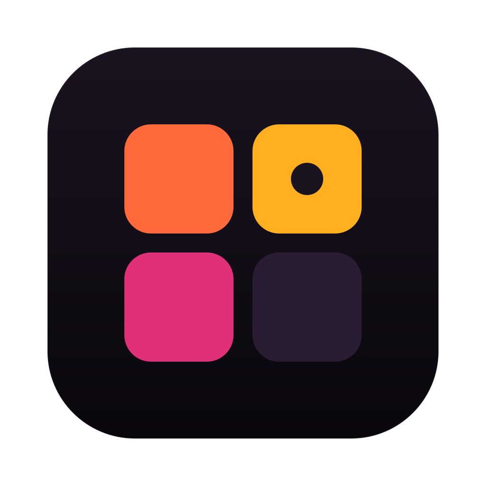
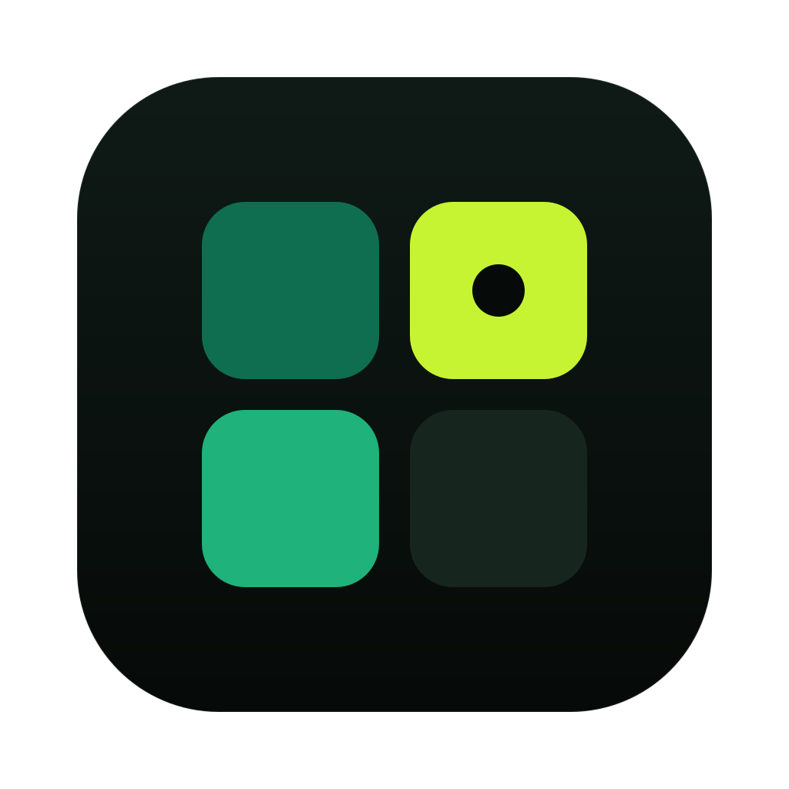
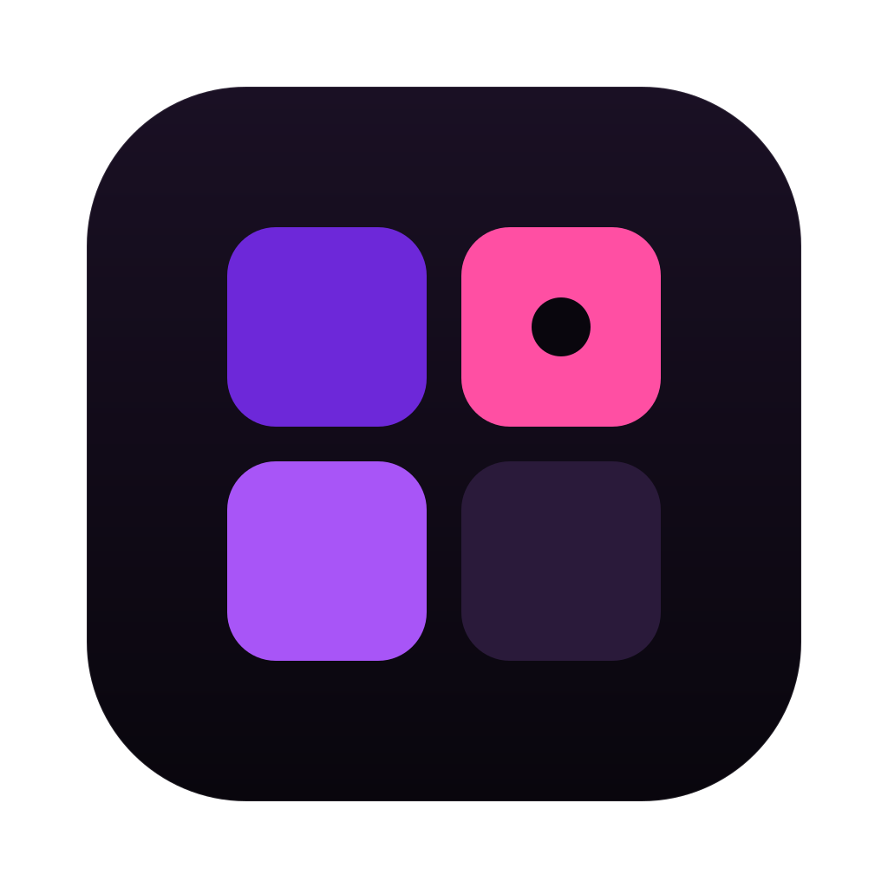
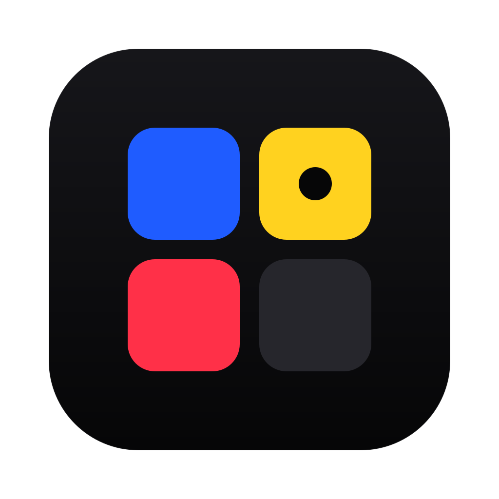

Negro con naranja, ámbar y magenta. Cálido y enérgico.

Negro con verdes esmeralda y menta; la activa en lima.
Azul marino con cian y azul real; la activa en blanco.

Negro con violetas; la activa en rosa.

Negro con azul, rojo y la activa en amarillo. Estilo Bauhaus.
Verde petróleo con turquesa; la activa en ámbar.